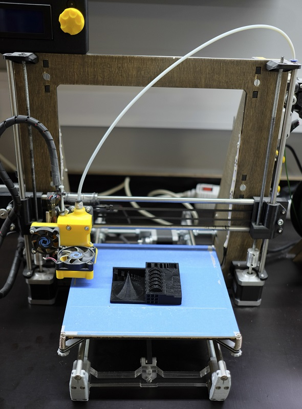
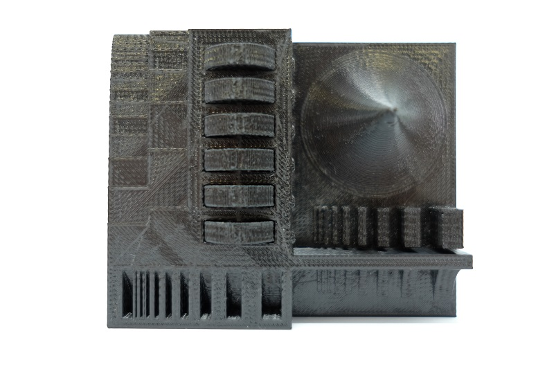
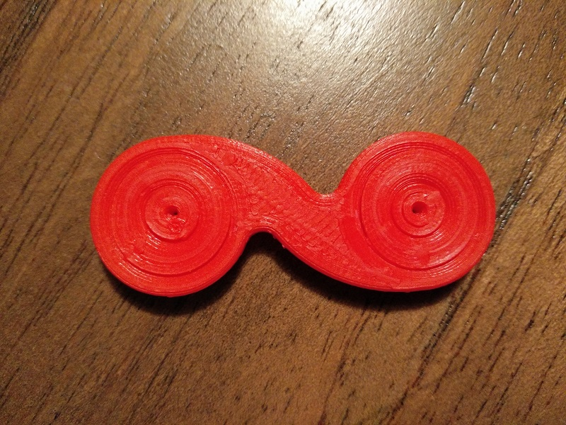
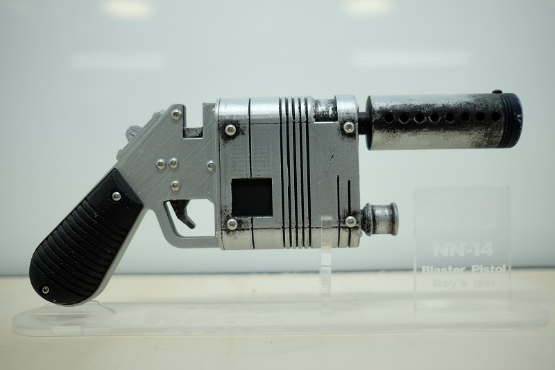
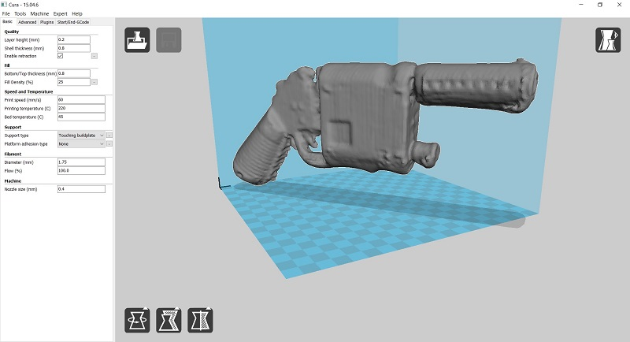

#05. 3D Scanning and Printing
3D Printing
Without a doubt this is a week really close to my heart, ever since i discovered 3D printing almost 4 years ago i am completely crazy and enthusiast for it. I started with making my own 3D printer (Prusa Mendel) that i took about a month to assemble and get it working, them started researching on this topic on the Material department of my faculty. There i made a Prusa i3 and tryed some diferent materials, some extruders, burned some eletronics, clogged some nozzles and so on.
After this i design and built my own Prusa i3 with some upgrades and mods that i find were missing(you can see it in the picture above). This is the printer that i use the most and i have at the FCT FabLab, with this printer i made the test print that was suggested.

The test wasn't a complete success, the wheels did not rotate and the tipe of the "cone" wasn't very perfect, but the rest seemed ok and didn't seem to have a hard time doing it.
Also, i design a very simples case for the pcb we did last week, it has a bottom thick enough that makes the copper touch the usb contacts without the need to put some solder on. Then is just a matter of push fit the top of the case to make a permanent casing.
For the object that could not be subtractively made, i design a small fidget object like so many seen nowadays with the detail that my doesn't need any ball bearing since. The image below shows how that works, i made some diferent gap sizes in order to get the right one. It was the 0.25mm that did it make roll with no stress, it's not as perfect the a ball bearing but still is made in under 10 minutes and you just need to fidget it!
3D Scan
Our lab has a 3D Systems Sense, it's a simple 3D scanner, just download the app, connect and scan. Unfortunately we weren't able the best results out of it, tryed ourselfs obviously but we couldn't get very good results, but we were able to scan some objects. In my case i ended up scanning a 3D print, it was the Rey's gun from StarWars that i 3D printed some time ago and painted it to make it more realistic.
The result wasn't still very good but you can see that it is the model that i scanned. It didn't seem to get all the detail, maybe it had something to do with the shiny metal paint it had, we even got a rotating base so that it was easier to move the objects without having to move the scanner so much. A next step i thing would be to use photogrammetry, maybe this way we can compare the results and understand the problem.
